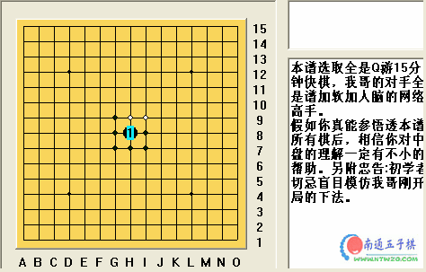

棋情秘谱
首页
定式及研究
#1 棋情秘谱 作者：有志青年 发表时间：2007-2-14 14:50:50
本谱选取全是Q游15分钟快棋，我哥的对手全是谱加软加人脑的网络高手。
假如你真能参悟透本谱所有棋后，相信你对中盘的理解一定有不小的帮助。另附忠告:初学者切忌盲目模仿我哥刚开局的下法。

 棋情密谱.rar
棋情密谱.rar
#2 Re:棋情秘谱 作者：aabb 发表时间：2007-2-21 0:16:11
棋情果然强人啊~
#3 Re:棋情秘谱 作者：gerbo 发表时间：2007-2-28 22:47:21
哪里有更多的有关高手棋谱的文章，我想去看看，谁给发下
#4 Re:棋情秘谱 作者：yidefei 发表时间：2007-3-3 17:29:15
有这样的学学还是很好的呀
#5 Re:棋情秘谱 作者：longfx 发表时间：2007-3-28 12:21:21
该帖建议转至连珠实战;-)
#6 Re:棋情秘谱 作者：yuyang 发表时间：2007-5-26 22:31:56
123
#7 Re:Re:棋情秘谱 作者：其牌乐75 发表时间：2007-5-29 15:55:15
高手~谢谢 ！！
#8 Re:棋情秘谱 作者：疾风之铃音 发表时间：2007-6-16 22:59:29
好东西
#9 Re:棋情秘谱 作者：疾风之铃音 发表时间：2007-6-16 23:59:32
看了下你哥的棋谱，如果没用软件和棋库下的话，以他的棋力拿全国冠军应该不成问题
#10 Re:棋情秘谱 作者：爱 发表时间：2007-11-29 5:36:08
实在看不过眼去才站出来说几句公道话：首先，这几个棋谱我都深入的研究过了，你哥的对手绝对不是你所说的谱软+人脑，而你哥99%至少是黑石软件+人脑；其次你所谓的那几个妙手其实深入的研究下去都是很普通，甚至较弱的选点，只不过由于对手是纯人脑或用了棋力较弱的软件（连珠妙手），所以才在后面的行棋中出现了致命的低级失误导致败北，而那几个点自然也成王败寇的被你吹嘘成制胜佳招。实质上根本没有什么研究学习价值，反而这些庸手劣着容易误导初学者，贻害颇深。以你的文学功底写些感性十足的诗歌散文还是很有造诣的；而写棋评不仅要有一定的文字表达基础，而更多的需要理智的思维、高超的棋力和严格审慎的治学态度。
#11 Re:棋情秘谱 作者：dskk 发表时间：2008-3-1 23:20:10
楼上说的有点道理，我也看了几局，我觉得你哥才像软件加人脑，这个东西很难说，你现实中看过你哥下棋吗？
#12 Re:棋情秘谱 作者：wrwak 发表时间：2008-9-9 22:05:20
10楼说得好 NB怎么不去拿世界竞标赛冠军
#13 Re:棋情秘谱 作者：兔子哥哥 发表时间：2008-9-9 23:01:44
对，其实这个棋情妹妹是酷妞，这是她以前讨好棋情而写的，呵呵，就当个娱乐吧！
#14 Re:棋情秘谱 作者：冷面孤煞 发表时间：2008-9-25 21:00:07
楼上的，我顶了又顶
#15 Re:棋情秘谱 作者：网尘 发表时间：2008-10-19 19:36:58
同意楼上的见解.
#16 Re:棋情秘谱 作者：其怪 发表时间：2008-11-3 14:19:34
同意11，12楼见解
#17 Re:棋情秘谱 作者：叶灏 发表时间：2009-1-19 22:14:42
好东西,谢谢!
#18 Re:棋情秘谱 作者：爱好者友 发表时间：2009-1-20 8:30:37
有新的斜月，疏星，瑞星棋谱吗？
#19 Re:棋情秘谱 作者：缘来 发表时间：2009-1-25 4:15:14
还是比较赞同十楼的。。。不过既然十三楼都说了，也就一笑带过